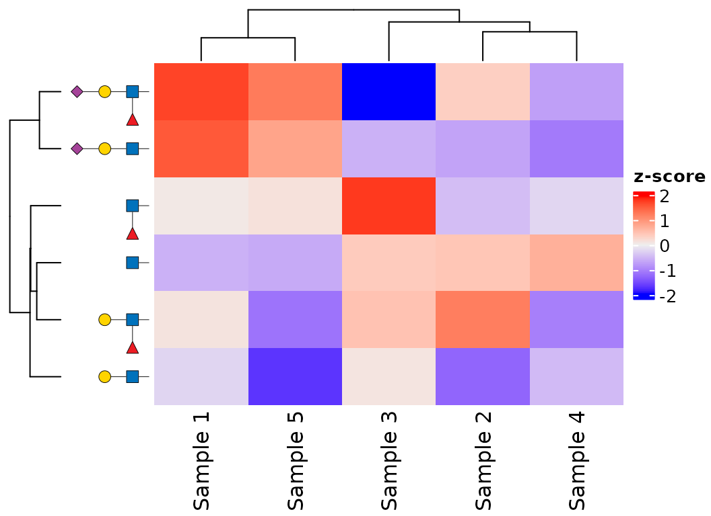
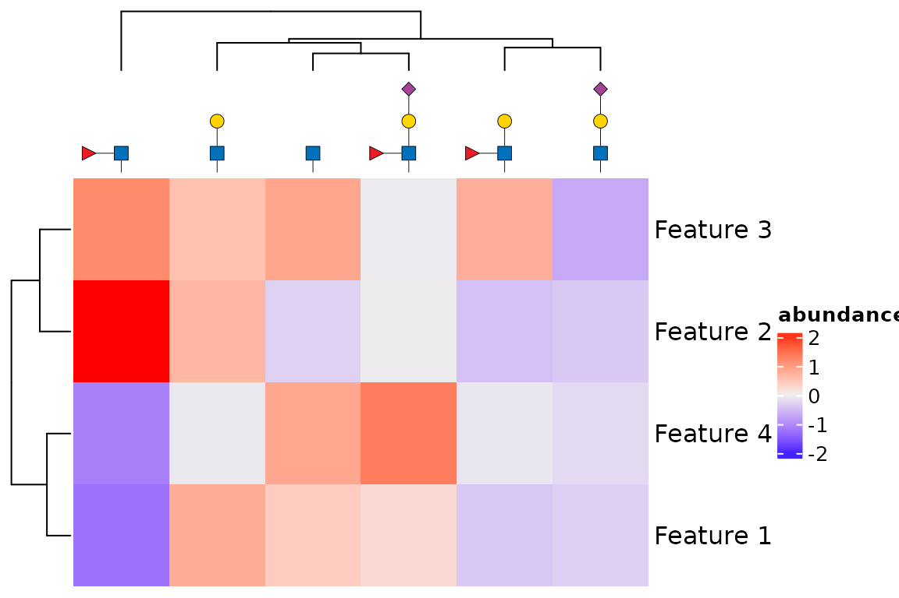
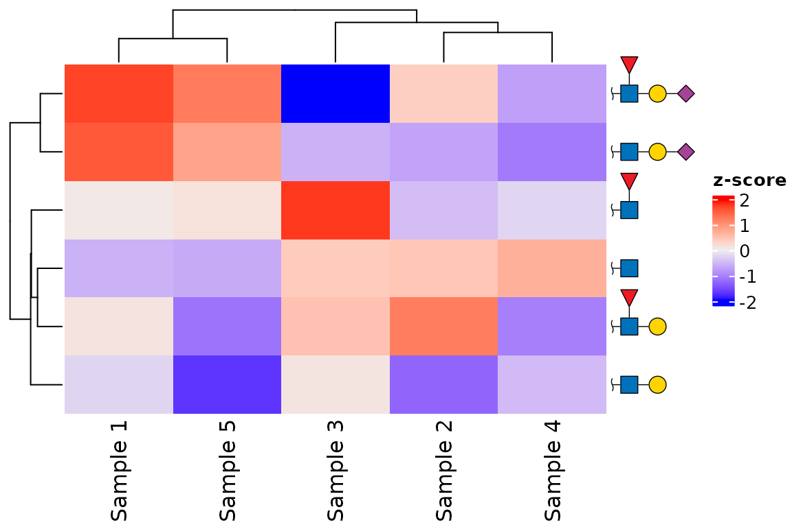

ComplexHeatmap
provides flexible annotations for heatmap rows and columns.
glydraw extends those annotations with
anno_glycan(), which draws SNFG cartoons in their place.
This is useful when rows or columns represent glycans and their
structures are more informative than text labels.
ComplexHeatmap is a suggested package, so install it
before using this vignette if necessary.
install.packages("BiocManager")
BiocManager::install("ComplexHeatmap")Label a heatmap with glycans
Pass one glycan structure for each row or column being labelled. The
order of the structure vector must match the corresponding
dimension of the matrix. anno_glycan() returns an
annotation that can be used in rowAnnotation() or
HeatmapAnnotation().
set.seed(123)
structures <- c(
"GlcNAc(b1-",
"Gal(b1-4)GlcNAc(b1-",
"Neu5Ac(a2-?)Gal(b1-4)GlcNAc(b1-",
"Fuc(a1-3)GlcNAc(b1-",
"Gal(b1-4)[Fuc(a1-3)]GlcNAc(b1-",
"Neu5Ac(a2-?)Gal(b1-4)[Fuc(a1-3)]GlcNAc(b1-"
)
mat <- matrix(
rnorm(length(structures) * 5),
nrow = length(structures),
dimnames = list(NULL, paste0("Sample ", 1:5))
)Here, the row labels appear on the left. Set
show_row_names = FALSE because the cartoons replace the
usual row names. The annotation follows the heatmap’s row order, so it
remains attached to the right glycan after clustering, reordering, or
splitting.
Heatmap(
mat,
name = "z-score",
show_row_names = FALSE,
left_annotation = rowAnnotation(
glycan = anno_glycan(
structures,
which = "row",
size = 0.2,
show_linkage = FALSE
)
)
)
Use glycans as column labels
Column annotations work the same way. The default orientation is
vertical for column labels and horizontal for row labels, with the
reducing end anchoring each cartoon next to the heatmap. The
side must be compatible with the annotation placement: use
"top" or "bottom" for columns, and
"left" or "right" for rows.
glycan_mat <- matrix(
rnorm(length(structures) * 4),
ncol = length(structures),
dimnames = list(paste0("Feature ", 1:4), NULL)
)
Heatmap(
glycan_mat,
name = "abundance",
show_column_names = FALSE,
top_annotation = HeatmapAnnotation(
glycan = anno_glycan(
structures,
which = "column",
side = "top",
size = 0.2,
show_linkage = FALSE
)
)
)
Control the annotation appearance
The annotation accepts the same drawing controls that glycan scales
use. size, angle, hjust,
vjust, nudge_x, and nudge_y
adjust placement; show_linkage, style, and
red_end control the cartoons themselves. The required row
width or column height is calculated
automatically from the rendered cartoons. Supply a
grid::unit() value only when you need a fixed annotation
extent.
This example uses compact labels with linkage text suppressed, a wavy reducing end, and a right-side row annotation.
Heatmap(
mat,
name = "z-score",
show_row_names = FALSE,
right_annotation = rowAnnotation(
glycan = anno_glycan(
structures,
which = "row",
side = "right",
orient = "right",
size = 0.2,
show_linkage = FALSE,
style = style_glydraw(
red_end = "~",
node_size = 1.4,
edge_linewidth = 1.2,
node_linewidth = 1.2
)
)
)
)
Keep labels aligned with the data
Create the annotation from the same vector used to construct the
heatmap matrix. Do not reorder the structures manually to match a
dendrogram: ComplexHeatmap supplies the final row or column
indices to anno_glycan() when it draws each heatmap slice.
This also preserves alignment when you use row_split,
column_split, or explicit row and column orders.
For additional drawing options, see ?anno_glycan and the
glydraw as a ggplot2 extension vignette.